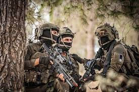
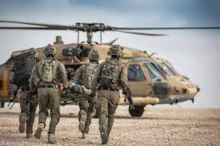
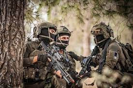
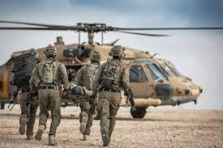

Shayatet 13
This is the Marine Commando unit of the Israeli Military under the Israeli Navy. It is respected as among the best of the world's special forces, and is compared to the US Navy SEALs and Britains Special Boat Service. The details of many missions and identities of active operatives are kept highly classified.


 


